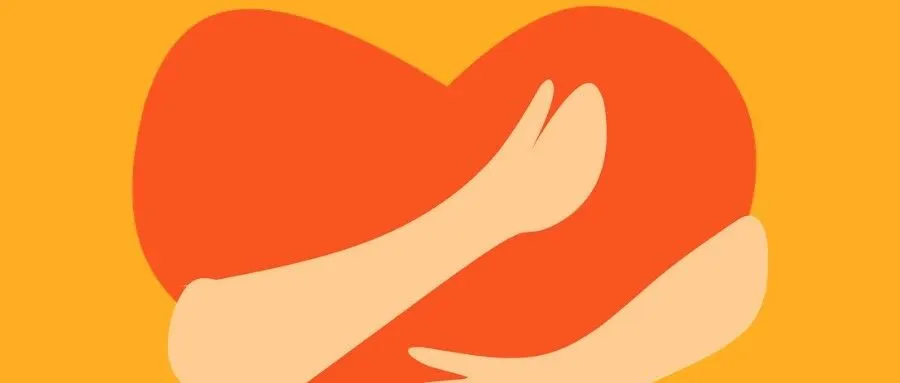
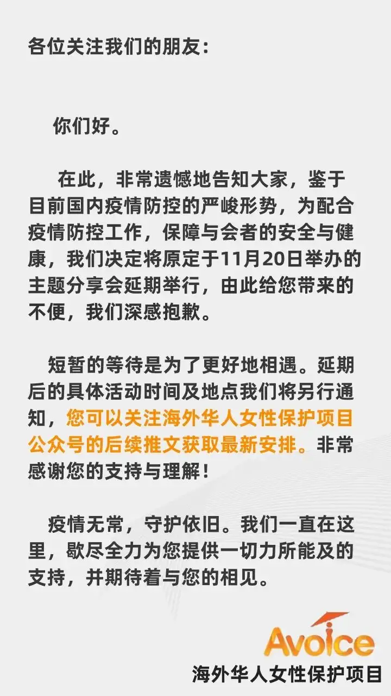
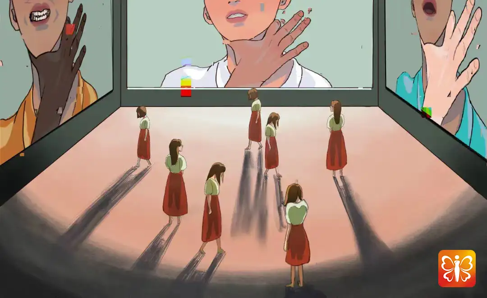

文字 I Avoice Team
排版 I 果子
图片 I rawpixels，自制
1.需要相关咨询和帮扶
2.想要获得Avoice采写发声支持
3.想要加入海外华人女性保护社群
4.想要合作或者为项目提供资源
欢迎添加Avoice女性保护小助手微信：Avoice-WomenAid

Avoice期望关注女性权益的您能够帮助我们转发此推文至海外华人社群、微信朋友圈等平台。
您的每一次传播都可能让我们触及到一位需要帮助的女性，您的每一次发声都可能是一位受家暴的她获得长期援助支持的起点。点击在看关注我们，贡献自己的一点力量！


爱无暴力
Stop Violence In Love

转载请联系本公众号
微信公众号：海外华人女性保护项目
微博：Avoice海外华人女性保护
知乎：Avoice华人女性保护
B站：Avoice华人女性保护
快手：Avoice华人女性保护
抖音：海外华人女性保护项目
Instagram：avoice_womenaid
领英：Avoice海外华人女性保护
邮箱：Av[email protected]